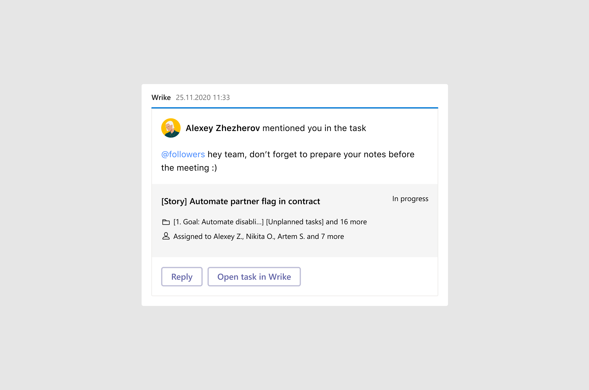

<!DOCTYPE html>
<html>
  <head>
    <meta charset="utf-8"/>
    <meta name="viewport" content="width=device-width, initial-scale=1.0"/>
    <meta property="og:type" content="article"/>
    <meta property="og:title" content="Как мы проектировали уведомления для MS Teams • Артём Самсонов • Продуктовый дизайнер"/>
    <meta property="og:description" content="Рассказываю о проблемах, с которыми мы столкнулись в процессе проектирования и как мы решали их с помощью пользователей"/>
    <meta property="og:image" content="http://artemsamsonov.com/img/default.jpg"/>
    <link href="https://fonts.googleapis.com/icon?family=Material+Icons" rel="stylesheet"/>
    <link rel="stylesheet"/><!-- Yandex.Metrika counter --> <script type="text/javascript" > (function(m,e,t,r,i,k,a){m[i]=m[i]||function(){(m[i].a=m[i].a||[]).push(arguments)}; m[i].l=1*new Date();k=e.createElement(t),a=e.getElementsByTagName(t)[0],k.async=1,k.src=r,a.parentNode.insertBefore(k,a)}) (window, document, "script", "https://mc.yandex.ru/metrika/tag.js", "ym"); ym(57652780, "init", { clickmap:true, trackLinks:true, accurateTrackBounce:true, webvisor:true, trackHash:true }); </script> <noscript><div></div></noscript> <!-- /Yandex.Metrika counter -->
    <title>Как мы проектировали уведомления для MS Teams • Артём Самсонов • Продуктовый дизайнер</title>
  <link href="./css/style.bundle.css" rel="stylesheet"></head>
</html>
<body class="body_light">
  <header class="header header_light">
    <div class="header__logo"><a class="header__logo-link" href="index.html">Артём Самсонов</a></div>
    <!--div.header__menu
    a.header__menu-elem(href="http://artemsamsonov.com/skills") Навыки
    a.header__menu-elem(href="http://artemsamsonov.com/my-experience") Работы
    a.header__menu-elem(href="http://artemsamsonov.com/#contacts") Контакты
    -->
  </header>
  <div class="content">
    <div class="article">
      <h1>Как мы проектировали уведомления для MS Teams</h1>
      <p>Во <a href="msteams-rebuild.html">вводной статье</a> я рассказывал, как мы перестали блуждать в тумане и перешли к планомерной работе над приложением Wrike для MS Teams.
      </p>
      <p class="article__text-annotation">Опираясь на новую стратегию, первым делом мы решили добавить уведомления в чаты MS Teams. Сегодня я расскажу о проблемах, с которыми мы столкнулись в процессе проектирования и как мы решали их с помощью наших активных пользователей.</p>
      <div class="article__list">
        <h4>Содержание статьи</h4><a href="#step1">Шаг 1. Узнаём, что нужно пользователям</a><a href="#step2">Шаг 2. Проектируем необходимые уведомления</a><a href="#step3">Шаг 3. Улучшаем взаимодействие</a><a href="#step4">Шаг 4. Проектируем подключение и отключение уведомлений</a><a href="#step5" id="step1">Итоги первой итерации</a>
      </div>
      <h2>Шаг 1. Узнаём, что нужно пользователям</h2>
      <p>Из интервью мы уже знали, что нашей интеграцией пользуются пользователи с разными ролями — и, что более важно, им важны разные виды уведомлений.</p>
      <p>Пообщавшись с пользователями ещё раз, мы определили основные типы полезных уведомлений для каждой роли:</p>
      <p class="article__image"><a href="../img/msteams-04.jpg" target="_blank"></a></p>
      <p>Так как в новой стратегии мы фокусировались прежде всего на Работниках, в первой итерации мы решили уведомлять пользователей, если:</p>
      <ul>
        <li><span>Кто-то назначил на них задачу</span></li>
        <li><span id="step2">Кто-то упомянул их в комментарии</span></li>
      </ul>
      <h2>Шаг 2. Проектируем необходимые уведомления</h2>
      <p>Дизайн-система MS Teams позволяет нам отправлять не только текстовые сообщения, но и карточки с более сложной структурой. Мы разработали карточки для каждого типа уведомлений:</p>
      <p class="article__image"><a href="../img/msteams-05.jpg" target="_blank"></a><span class="article__image-caption">Такая карточка придёт в чат, если кто-то упомянет пользователя в комментариях</span></p>
      <p class="article__image"><a href="../img/msteams-06.jpg" target="_blank"><span class="article__image-caption">А такая — если кто-то назначит на него задачу</span></a></p>
      <p id="step3">Мы намеренно решили не присылать уведомление, если человек назначал задачу сам на себя или упоминал себя в комментариях.</p>
      <h2>Шаг 3. Повышаем взаимодействие</h2>
      <p>Дизайн-паттерны MS Teams позволяют пользователям взаимодействовать с карточками. Мы решили добавить возможность быстро отвечать на упоминания:</p>
      <p class="article__image">
        <iframe src="https://www.youtube.com/embed/QIW3uzlukgE?controls=0" title="YouTube video player" frameborder="0" allow="accelerometer; clipboard-write; encrypted-media; gyroscope; picture-in-picture" allowfullscreen></iframe>
      </p>
      <p id="step4">Вместо того, чтобы открывать задачу в Wrike и пролистывать ленту комментариев до нужного места, пользователи смогли отвечать на срочные вопросы, не переключая контекст.</p>
      <h2>Шаг 4. Проектируем подключение и отключение нотификаций</h2>
      <p>Мы понимали, что не все пользователи захотят получать уведомления по умолчанию. Именно поэтому мы спроектировали сценарии подключения и отключения нотификаций:</p>
      <p class="article__image">
        <iframe src="https://www.youtube.com/embed/pnWBrte-l5E" title="YouTube video player" frameborder="0" allow="accelerometer; autoplay; clipboard-write; encrypted-media; gyroscope; picture-in-picture" allowfullscreen></iframe>
      </p>
      <p>На данном этапе мы очень вдумчиво работали вместе с командой UX-писателей для того, чтобы сделать тексты понятными и прозрачными, а также учесть всевозможные ошибки при авторизации:</p>
      <p class="article__image" id="step5">
        <iframe src="https://www.youtube.com/embed/hQVzmGMA9BU" title="YouTube video player" frameborder="0" allow="accelerometer; autoplay; clipboard-write; encrypted-media; gyroscope; picture-in-picture" allowfullscreen></iframe>
      </p>
      <h2>Итоги первой итерации</h2>
      <p>Протестировав изменения на группе активных пользователей, мы получили позитивную обратную связь и поняли, что двигаемся в нужном направлении. Чаще всего пользователи просили добавить больше функционала. Они хотели:</p>
      <ul>
        <li><span>Тонко настраивать присылаемые уведомления (например, тестировщикам важно было знать о переходе задач в статус «Ready for test»)</span></li>
        <li><span>Переназначать задачи, не выходя из чата</span></li>
        <li><span>Получать дайджесты по нотификациям по запросу или в конце рабочего дня</span></li>
      </ul>
    </div>
  </div>
<script type="text/javascript" src="./js/bundle.js"></script></body>